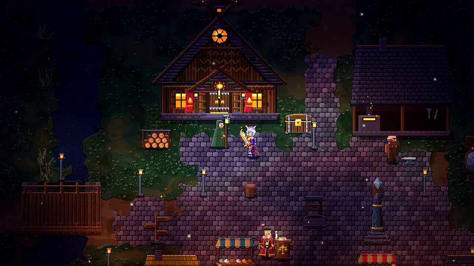
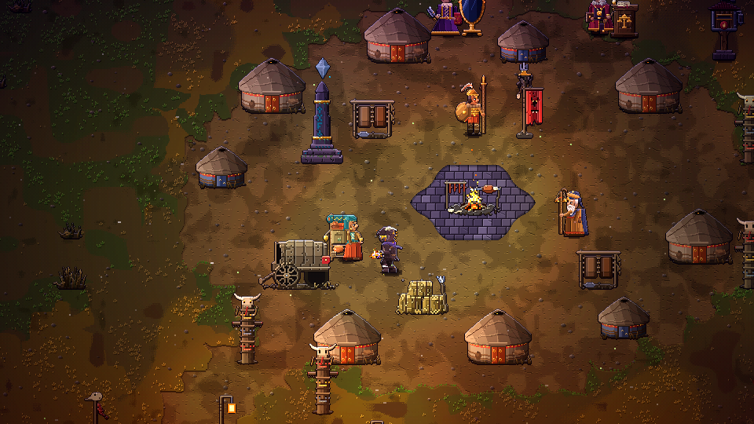
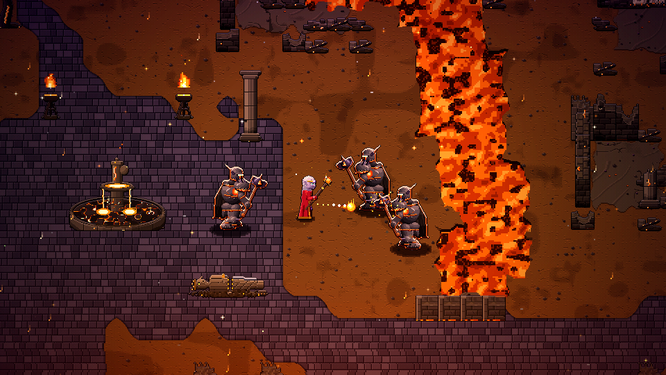

Stufe 1 bis 40
Von der Glutsenke zum Aschethron
Fünfzehn Gebiete. Bis zu 40 Spieler in jeder Welt.
-
1–5
Glutsenke
Startgebiet
„Die Glut in der Senke wird unruhig, Wanderer.“
Maren, Dorfälteste
-
6–11
Der Aschenwald
Wildnis
„Bleib auf den Wegen. Im Aschenwald jagt alles, was noch atmet.“
Ilsa, Waldwächterin
-
12–17
Die Schlackenhöhen
Wildnis
„Die Feste hält. Noch. Wir brauchen jede Klinge.“
Hale, Kommandant der Rauhwacht
-
Ab Stufe 20 reitest du
- Steppenpferd
- Frostelch
- Reifschwinge
- Aschenwolf
Dazu öffnen sich die Glutprüfungen.
-
20–25
Die Aschensteppe
Wildnis
„Ein Reittier sucht sich seinen Reiter aus. Meistens jedenfalls.“
Orla, Stallmeisterin
-
In den Städten

- Auktionshaus
- Postfach
- Auftragsbrett
- Wegstein
-
25–31
Die Faulmarsch
Wildnis
„Atme flach. Die Sporen sind heute gierig.“
Thane, Moorwächter
-
31–36
Die Frostzinnen
Wildnis
„Der Winter hier oben verzeiht nichts. Ich auch nicht.“
Eskil, Jarl von Frosthold
-
Bis zu 40 Spieler in jeder Welt

-
36–40
Die Glutöde
Wildnis
„Hinter diesen Mauern endet die Welt. Vor ihnen beginnt der Thron.“
Corvane, Marschall der letzten Bastion